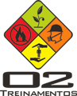

Nossos Serviços
Segurança do Trabalho
A O2 Segurança do Trabalhos e Soluções Ambientaisconta com uma equipe de profissionais qualificados e experientes para ofercer toda assessoria necessária na área de Segurança do Trabalho para sua empresa.
Soluções Ambientais
A Favor do Meio Ambiente a O2 Segurança do Trabalhos e Soluções Ambientais está comprometida e preparada para dar a sua empresa todo o suporte necessário para as questões em Soluções Ambientaispara que sua empresa cresça sem agredir nosso planeta.
Emergências
Conte com a O2 Segurança do Trabalhos e Soluções Ambientais para assessorar, treinar e preparar sua empresa ná área de Emergências.
Temos o que sua empresa precisa
Treinamentos
Presencial
- Treinamentos em segurança do trabalho
-
- Formação e Reciclagem da Brigada de incêndio e Emergência;
- Atendimento a Emergências Químicas;
- Formação de CIPA;
- Transporte e manuseio de produtos químicos e direção defensiva;
- Movimentação de Cargas: Paleteira e Pontes Rolante;
- NR 11 - Assessoria e Inspeção de Máquinas e Equipamentos;
- NR 33 - Formação de Trabalhadores e Observadores para Trabalho em Espaços Confinados;
- NR-13 – Vaso de pressão: Formação e Reciclagem de Operador de Caldeiras e Vasos de Pressão;
- NR-35- Trabalhos em Altura.
- Treinamentos em Soluções Ambientais:
-
- Conscientização Ambiental;
- Multiplicadores ISO-14001;
- Coleta Seletiva.
- Treinamentos em Emergências:
-
- Treinamentos Teóricos e Práticos Destinados à Prevenção e à preparação de profissionais envolvidos nas operações de transporte, manuseio e armazenagem de produtos perigosos bem como orientação sobre legislação ambiental e trabalhista vigente - riscos e responsabilidades associados.
EAD
É uma plataforma de Ensino a Distancia da O2 Treinamentos, contendo os mesmo cursos oferecidos pelo Presencial.
 Visite a Plataforma EADGaleria de fotos
{kind=link}
{kind=link}
{kind=link}
{kind=link}
{kind=link}
{kind=link}
Contato
Telefones
- (19) 3292-8326
- (19) 3363-2500
- contato@o2web.com.br
Endereço
Rua Bahia, 70, Bairro José Paulino Nogueira - Paulínia - SP